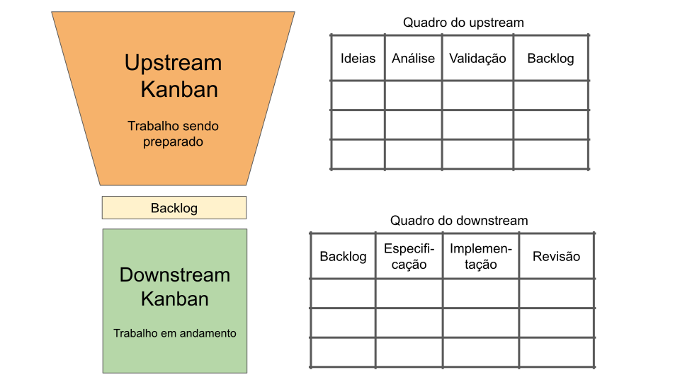

Compre na Amazon, Submarino ou MercadoLivre.
Engenharia de Software Moderna
Perguntas Frequentes sobre Métodos Ágeis
O objetivo deste artigo é responder perguntas sobre temas relacionados com métodos ágeis e que não são abordados no Capítulo 2 do livro.
Segue a lista atual de perguntas:
- Quando surgiram os conceitos de métodos ágeis?
- O que é mob programming?
- Além de histórias, quais outros itens podem fazer parte do backlog do produto?
- Posso estimar histórias de usuários em horas?
- O que é Grooming?
- O que faz um Líder Técnico?
- Em Scrum, o que é um líder servidor?
- Qual a diferença entre times orientados por projeto e por produto?
- O que é Upstream e Downstream Kanban?
- É possível voltar com o cartão em um quadro Kanban?
1. Quando surgiram os conceitos de métodos ágeis?
Usualmente, costuma-se dizer que foi em fevereiro de 2001, com o lançamento do Manisfesto Ágil.
Porém, não podemos achar que tudo foi inventado na reunião realizada em uma estação de esqui no estado de Utah (EUA), com duração de três dias.
Mesmo antes de 2001, existiram trabalhos importantes na área, conforme datado a seguir:
- 1989: primeiro framework de testes de unidade, chamado SUnit, implementado por Kent Beck para Smalltalk.
- 1992: primeira tese de doutorado sobre refactoring, de autoria de William Opdyke.
- 1995: primeira versão de Scrum (veja o paper, de autoria de Ken Schwaber).
- 1999: primeira edição do livro sobre XP, por Kent Beck.
E após fevereiro de 2001 também temos trabalhos importantes que influenciaram na difusão das ideias ágeis, tais como:
- 2001: primeiro servidor de integração contínua, chamado CruiseControl, implementado por desenvolvedores da ThoughWorks.
- 2002: primeira edição do livro sobre TDD, por Kent Beck.
- 2004: primeira vez que Kanban foi usado em desenvolvimento de software, por David J. Anderson, na época trabalhando na Microsoft.
- 2009: primeira conferência sobre DevOps, organizada por Patrick Dubois.
- 2011: publicação do livro Lean Startup, de Eric Ries.
2. O que é mob programming?
Mob programming pode ser vista como uma extensão da ideia de programação em pares. Ou seja, em vez de duas pessoas programarem juntas, em mob programming temos um time inteiro trabalhando em uma mesma tarefa de programação. No entanto, recomenda-se que o tamanho desse time seja limitado a quatro ou cinco pessoas, incluindo desenvolvedores, mas também POs e outros profissionais. Um deles é chamado de piloto (driver) e comanda o teclado; os demais são os navegadores. Cabe aos navegadores propor e discutir ideias e auxiliar o piloto a codificá-las.
Veja como Woody Zuill – um dos principais proponentes do conceito de mob programming – descreve a iteração entre navegadores e piloto:
É importante que os navegadores se expressem no nível de abstração mais alto que o piloto (e o resto da equipe) seja capaz de entender. Às vezes, isso pode ocorrer de forma genérica, quando o piloto já entendeu o conceito que será codificado e pode prosseguir sem necessidade de instruções detalhadas. Por outro lado, se necessário, os navegadores devem ser capazes de se expressar de forma detalhada, praticamente ditando os comandos que deverão ser digitados pelo piloto.
Se a sessão for realizada de forma presencial, um projetor multimídia deve ser usado para facilitar a participação dos navegadores. Esses últimos podem usar também laptops próprios para realizar pesquisas ou outras tarefas em paralelo. Já no caso de sessões de mob programming remotas, o piloto pode compartilhar sua tela com os navegadores.
Assim como em programação em pares, deve-se periodicamente fazer um rodízio do piloto. Normalmente, esse rodízio ocorre em intervalos curtos, por exemplo, de 15 minutos.
Mob programming pode ser usada para integrar o time, para aprendizado em grupo, para disseminação de conhecimento e evitar a formação de silos, etc.
3. Além de histórias, quais outros itens podem fazer parte do backlog do produto?
Quando se usa Scrum, histórias de usuários – ou seja, features ou requisitos funcionais do sistema – são o principal item do backlog do produto.
No entanto, outros itens também podem ser incluídos no backlog do produto, tais como:
Solicitações de correção de bugs, principalmente bugs importantes e que levarão mais tempo para serem corrigidos.
Manutenções adaptativas, como, por exemplo, migrar o sistema para uma versão mais nova de um framework, banco de dados ou linguagem de programação.
Refatorações grandes e importantes, bem como outras atividades para pagamento de Débito Técnico.
Instalação ou configuração de algum sistema ou framework mais complexo, como um banco de dados.
Resumindo, conforme afirmado no Scrum Guide, qualquer trabalho que é necessário para melhorar o produto
pode ser incluído no backlog do produto.
Por outro lado, se temos uma tarefa técnica, como as descritas acima, mas que tem uma complexidade pequena, ela pode ir direto para o backlog de um determinado sprint. Por último, se a tarefa é bastante simples, nem para o backlog do sprint ela precisa ir… Basta que algum desenvolvedor a realize e pronto.
4. Posso estimar histórias de usuários em horas?
Sim, histórias podem ser estimadas em unidades de tempo, tais como horas ou homens/hora, por exemplo.
Por outro lado, os defensores de story points argumentam que o maior problema de usar medidas de tempo é que existem sempre dois tempos
: o tempo ideal e o tempo consumido (elapsed). Explicando melhor, quando alguém afirma que vai implementar uma história em um dia (tempo ideal), ele pode na verdade levar um pouco mais. O motivo é que sempre vão ocorrer interrupções, tais como reuniões, bugs críticos para corrigir, compromissos pessoais, idas ao médico, etc. Muitas vezes, essa diferença entre tempo ideal e tempo consumido pode acabar gerando um mal-entendido. Algo assim: você prometeu que ia fazer isso em um dia, mas já se passaram dois dias e você não entregou ainda!
Por exemplo, em seu livro Scrum Essencial, Kenneth Rubin afirma o seguinte:
Não há uma resposta certa ou errada sobre o uso de story points e dias ideais. No entanto, um argumento importante contra o uso do tempo ideal consiste no risco de mal-entendidos.
E o autor conclui com o exemplo de um jogo de futebol americano, que tem quatro tempos de 15 minutos, ou seja, uma hora ideal. Apesar disso, uma partida de futebol americano dura, quase sempre, mais de três horas.
5. O que é Grooming?
O termo grooming designa as atividades realizadas com o propósito de cuidar
do backlog do produto. Portanto, são atividades que devem ser lideradas pelo Product Owner (PO), mas com a colaboração dos demais membros do time. Dentre essas atividades, podemos mencionar as seguintes: descobrir, criar, estimar, priorizar, remover, refinar, entender, especificar ou particionar histórias de usuários. Alguns autores, como Kenneth Rubim, no livro Scrum Essencial, sugerem que 10% do tempo dos membros de um time Scrum deve ser alocado para atividades de grooming. Ou seja, cerca de 4 horas semanais. No entanto, não existe um evento ou momento específico para realização do grooming. Ele pode ser realizado, por exemplo, em reuniões específicas convocadas pelo PO.
6. O que faz um Líder Técnico (Tech Lead)?
Métodos ágeis não fazem distinção entre os desenvolvedores de um time. Por exemplo, o Guia do Scrum diz explicitamente que não devem existir sub-times ou hierarquias em um time. Porém, na prática, sabemos que os desenvolvedores têm níveis de experiência e conhecimento diferentes sobre o sistema que estão implementando ou mantendo. Além disso, existem tarefas que exigem maior responsabilidade, tais como:
- Implementar histórias mais complexas ou críticas.
- Definir e evoluir a arquitetura do sistema.
- Treinar e prover mentoria para desenvolvedores júnior.
- Monitorar o montante de débito técnico no sistema.
- Escolher novas tecnologias, como bibliotecas e frameworks.
- Explicar as decisões técnicas adotadas para os níveis superiores da empresa (por exemplo, CTO, CEO, etc).
- Ajudar na contratação de novos desenvolvedores.
Então, para assumir essas tarefas de maior responsabilidade, algumas empresas têm em seus times a figura de um Líder Técnico (Tech Lead). No entanto, como o próprio nome diz, o Líder Técnico não é o chefe do time e, portanto, ele não deve ser o controlador de todas as tarefas dos demais desenvolvedores.
7. Em Scrum, o que é um líder servidor?
Scrum usa esse termo para descrever o estilo de liderança que deve ser exercido por um Scrum Master. Ou seja, o Scrum Master não é o chefe
de um time Scrum, que lidera dando ordens, cobrando tarefas e prazos, etc. Em vez disso, ele é apenas mais um membro do time, que procura prestar serviços para o PO, para os desenvolvedores e também para a organização. Na versão mais recente do Scrum Guide (2020), o papel de um Scrum Master é assim resumido: eles são líderes verdadeiros, que servem tanto o time Scrum, quanto a organização maior [na qual o time está inserido].
8. Qual a diferença entre times orientados por projeto e por produto?
Vamos responder discorrendo sobre cada um dessas formas de organização de times.
Times orientados por projeto
Recomenda-se ter times orientados por projeto quando o escopo e as funcionalidades do sistema que será desenvolvido estão bem definidos. Ou seja, o que
o sistema deve fazer está claro. Logo, a função principal do time é implementar as funcionalidades requeridas pelos clientes. Isso não impede que exista um PO (Product Owner
) que vai funcionar como uma ponte entre os clientes e os desenvolvedores do time.
Os projetos têm sempre uma duração bem definida. Após o seu término, o sistema é entregue ao contratante, que assume sua manutenção e evolução. O time pode então migrar para outro projeto.
Times orientados por produto
Recomenda-se ter times orientados por produto quando os requisitos do sistema que será desenvolvido não são claros. Um time orientado por produto recebe como entrada um problema e deve descobrir
o melhor sistema que vai solucioná-lo. Assim, o time tem autonomia para definir as funcionalidades do sistema.
Técnicas como Design Thinking, MVPs e Testes A/B são frequentemente usadas por times orientados por produto. Também já está acordado que os times vão manter e evoluir o sistema desenvolvido, normalmente por anos, até que ele seja descontinuado.
Normalmente, um time orientado por produto desenvolve um sistema para clientes externos. No entanto, os clientes podem ser também internos à organização. Por exemplo, suponha que uma empresa desenvolve um produto X para clientes externos. Porém, um time dessa organização pode ser responsável por desenvolver internamente um produto Y, que facilita a implantação de X em plataformas de computação em nuvem.
Resumo
Não existe uma organização de times melhor do que a outra. No entanto, times orientados por projeto devem ser usados quando o problema a ser resolvido é bem conhecido, assim como a solução (sistema) a ser implementada. É importante também que essa solução demande poucas manutenções, principalmente manutenções evolutivas.
Normalmente, os times de fábricas ou agências de software são orientados por projeto. Já empresas de tecnologia – cujo principal negócio são sistemas ou serviços de software – possuem times orientados por produto.
9. O que é Upstream e Downstream Kanban?
O quadro Kanban, como explicamos no Capítulo 2, começa à sua esquerda com um backlog de tarefas.
No entanto, se os times não tomarem cuidado, esse backlog pode crescer muito e passar a incluir tarefas complexas, que ainda não foram devidamente entendidas pelo time ou que não vão agregar valor ao produto. Pode ser então que o time não consiga escolher as tarefas certas para implementar, já que o backlog transformou-se em uma extensa lista não-priorizada de tarefas obscuras.
Para isso, o uso de Kanban costuma ser dividido em dois fluxos:
Upstream Kanban: define um fluxo de atividades para cuidar do backlog, evitando que ele fique grande e confuso. Por exemplo, pode-se prever atividades para entender as demandas dos clientes e priorizá-las. Assim, somente vão entrar no backlog as tarefas que, de fato, devem ser implementadas pelo time.
Downstream Kanban: representa o fluxo principal de Kanban, tal como estudamos no Capítulo 2, que começa com o backlog e prossegue com os passos de implementação das tarefas, tais como especificação, codificação e revisão.
Para ilustrar esses dois fluxos, costuma-se usar a imagem de um funil, como na seguinte figura:

O Upstream Kanban corresponde à parte do funil que vai se estreitando para deixar claro que nem toda demanda proposta pelos stakeholders precisa chegar ao backlog.
Resumindo: no Upstream, especificamos e decidimos o que deve ser implementado; no Downstream, implementa-se o que foi decidido.
Antes de concluir, gostaríamos de comentar sobre a origem dos termos upstream e downstream. Uma possível tradução seria montante (upstream) e jusante (downstream). Especificamente, quando se constrói uma barragem em um rio, a parte do seu leito que foi represada, dando origem ao repositório ou lago, chama-se montante do rio; a parte do rio após a barragem é chamada de jusante.
10. É possível voltar com o cartão em um quadro Kanban?
Explicando melhor: suponha um quadro com passos Especificação, Implementação e Revisão. Suponha ainda que – no passo de revisão – detectou-se que uma tarefa foi especificada (e implementada) de forma errada. O que deve-se fazer?
Nesse caso, e principalmente se o erro foi grave e demandará um bom tempo para ser corrigido, não existe alternativa, a não ser voltar com o cartão que descreve a tarefa para o passo de especificação, para que ela seja re-especificada e re-implementada, agora de forma correta.
Voltar para a lista de artigos.